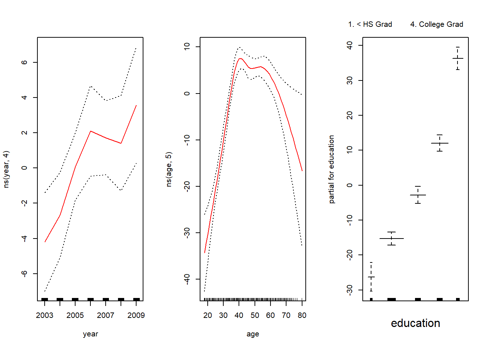
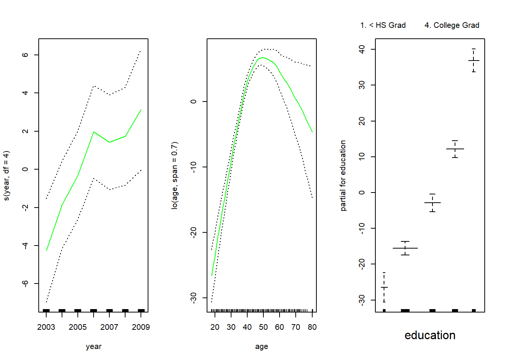
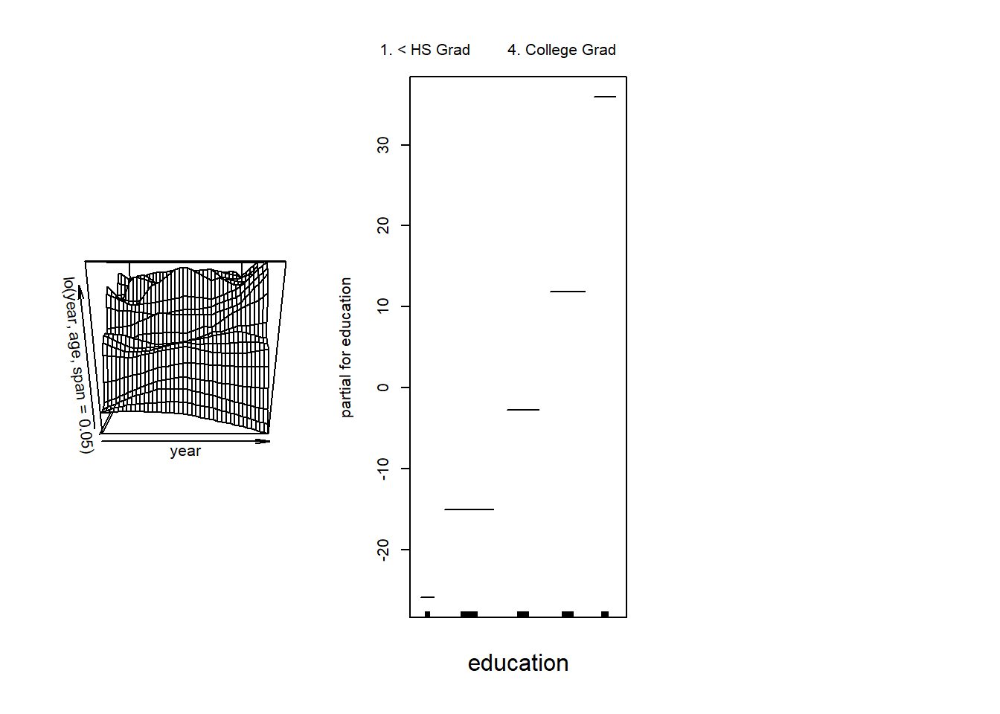
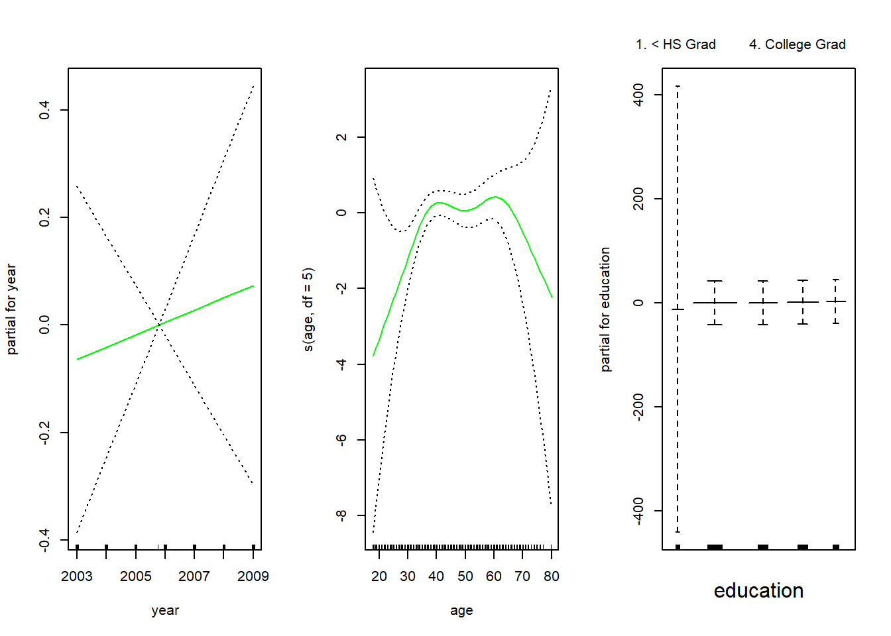
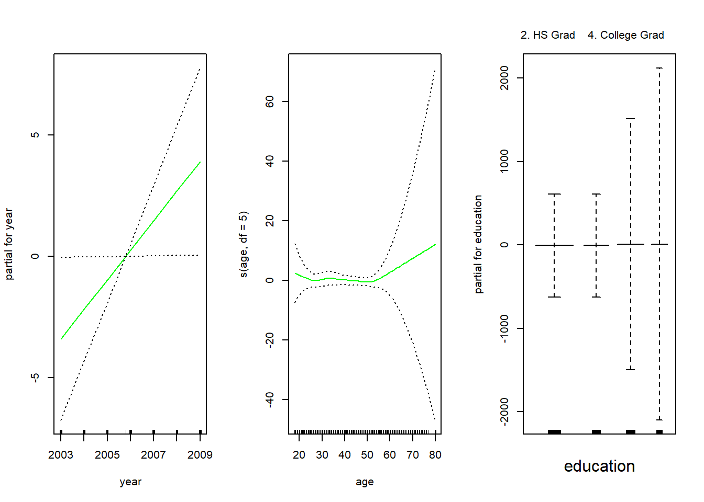
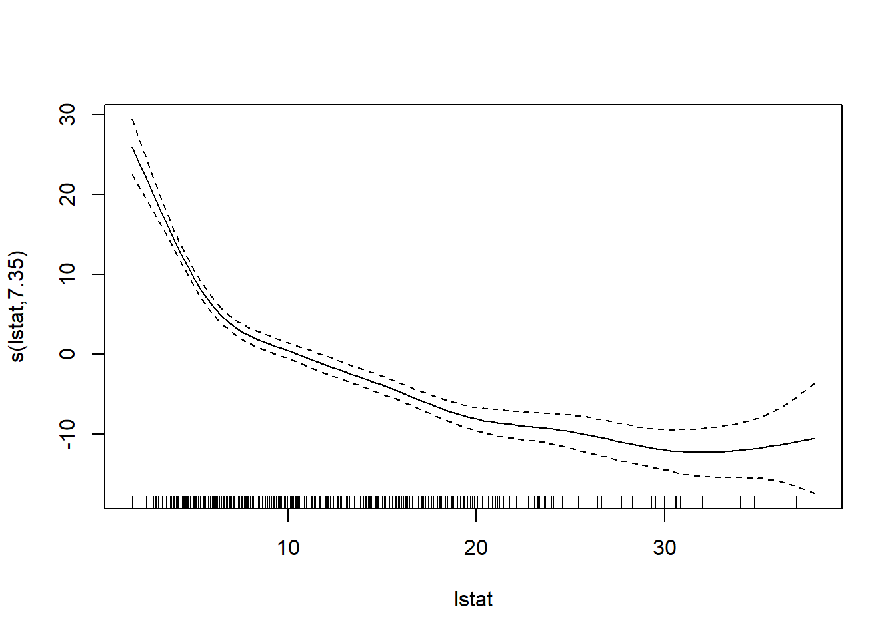
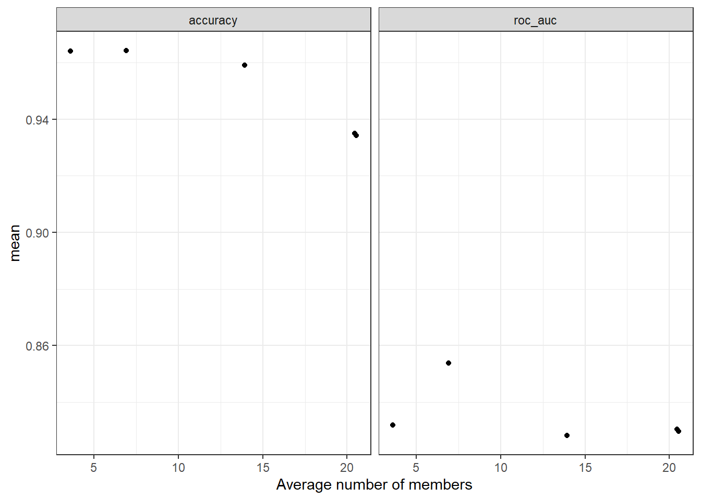

Chapter 6 Generalized Additive Models
- A more flexible method for nonlinear regression models
\[ E(Y|X_1,X_2,\dots,X_p)= \alpha + f_1(X_1) + f_2(X_2)+ \dots + f_p(X_p) \]
where \(f_j(.),j = 1,\dots, p\) are unspecified smooth (nonparametric) functions
Notes:
We call this model additive because we separate \(f_j\) for each \(X_j\)
Complicated functions for each features are allowed, and we can still retain the interpretability
Equivalently, the model can be rewritten as
\[ y_i = \alpha + \sum_{j=1}^p f_j (x_{ij}) + \epsilon_i \]
\(\epsilon\) usually is chosen to follow Gaussian distribution
If each of the function \(f_j(.)\) were written as a basis expansion, then we are back at least squares
A general approach to fit each function would be a “scatterplot smoother” (e.g., cubic Smoothing splines or Kernel Smoothing) using an algorithm that simultaneously estimates all p-functions
Transformation of the mean response (e.g., link function) as in Generalized linear models can also be applied.
Example:
Consider two-group classification via logistic regression. We relate the mean of the binary response
\[ \mu(X) = P(Y=1|X) \]
to functions of the predictors via an additive regression model using a logit link function
\[ \log(\frac{\mu(X)}{1- \mu(X)}) = \alpha + f_1 (X_1) + \dots + f_p(X_p) \]
where each \(f_j\) is an unspecified smooth function
In general, we relate the conditional mean response to the additive function of the predictors via a link function, \(g\):
\[ g(\mu(X)) = \alpha + f_1(X_1) + \dots + f_p(X_p) \]
Examples:
\(g(\mu) = \mu\) the identity link
\(g(\mu) = logit(\mu)\) or \(g(\mu) = probit(\mu)\) as in the glm case for binary and binomial data (probit function is the inverse Gaussian cumulative distribution function: \(probit (\mu) = \Phi^{-1}(\mu)\)
\(g(\mu) = \log(\mu)\): Poisson count data
Function \(f_j\) can be nonlinear or linear or any other parametric forms. or a combination of them:
\(g(\mu) = X^T \beta + \alpha_k + f(Z)\): a semi-parametric model, where
\(X\) is a vector of predictors to be modeled linearly
\(\alpha_k\) the effect for the k-th level of a qualitative input V
the effect of the predictor \(Z\) is modeled nonparametrically
\(g(\mu) = f(X) + g_k(Z)\) where
- \(k\) indexes the levels of a qualitative input V and thus creates an interaction term with Z, \(g(V,Z) =g_k(Z)\)
\(g(\mu)= f(X)+g(Z,W)\): where \(g\) is a nonparametric function in two features, \(Z\) and \(W\)
6.1 Fitting Additive Models
We choose the function \(f_j\) to be “smoothers.” Then, we minimize a penalized sum of squares
\[ PRSS(\alpha, f_1,\dots, f_p) = \sum_{i=1}^n (y_i - \alpha- \sum_{j=1}^p f_j(x_{ij}))^2 + \sum_{j=1}^p \lambda_j \int f''_j (t_j)^2 dt_j \]
where the \(\lambda_j \ge 0\) are tuning parameters
The minimizer is an additive cubic spline model with each of the functions \(f_j\) a cubic spline in \(X_j\) and with knots at each of the unique values of \(x_{ij}, i = 1,. \dots, n\)
This solution is not unique because \(\alpha\) is not identifiable without another constraint. Hence, we add \(\sum_{i=1}^n f_j(x_{ij})=0 \forall j\) which implies \(\hat{\alpha}= ave(y_i)\)
If \(\mathbf{X} = \{x_{ij}\}\) is of full column rank, then the minimizer is unique
If this isn’t the case (i.e., \(\mathbf{X'X}\) is singular) then the linear portions of the components \(f_j\) cannot be uniquely determined, but the nonlinear parts can
To fit the model, we have to use an iterative (backfitting) procedure
Let \(S_j\) be the cubic smoothing spline for the j-th function. We apply it to the target residuals \(\{y_i - \hat{\alpha} - \sum_{k \neq j}\hat{f}(x_{ik}) \}^n_1\) as a function of \(x_{ij}\) to obtain the new estimate \(\hat{f}_j\)
The procedure is done for each predictor using the current estimates of the other functions \(\hat{f}_k\) when computing the differences.
The process continue until the estimates \(\hat{f}_j\) stabilize
6.1.1 The Backfitting Algorithm for Additive Models
Step 1: Initialize
\[ \hat{\alpha} = \frac{1}{N}\sum_{1}^N y_i, \hat{f}_j \equiv 0, \forall i, j \]
Step 2: \(j = 1,2, \dots, p, \dots, 1, 2, \dots, p, \dots\)
\[ \hat{f}_j \leftarrow S_j [\{ y_i - \hat{\alpha}- \sum_{k \neq j} \hat{f}_k (x_{ik})\}^N_1] \]
\[ \hat{f}_j \leftarrow \hat{f}_j - \frac{1}{N} \sum_{i=1}^N \hat{f}_j (x_{ij}) \]
until the functions \(\hat{f}_j\) change less than a prespecified threshold
Notes:
Any smoother can be used to take the place of \(S_j\) such as
other univariate regression smoothers (e.g., local polynomial regression and Kernel Smoothing)
linear regression operators yielding polynomial fits, piecewise constant fits, parametric spline fits, Fourier series fits
smoothers for second or higher-order interactions or periodic smoothers for seasonal effect.
If we consider the smoother at the training points, it can be represented by the \(n \times n\) smoother matrix \(\mathbf{S}_j\) which can be used to estimate the df associated with the j-th term from \(trace(\mathbf{S}_j) -1\)
6.2 Fitting Generalized Additive Models
The optimization criterion here is the penalized log-likelihood
It maximizes by combining the backfitting procedure with a likelihood maximizer
The weighted linear regression component is replaced by a weighed backfitting algorithm Hastie, Friedman, and Tibshirani (2001) (section 9.2)
6.2.1 Local Scoring Algorithm
Step 1: Compute \(\hat{\alpha} = \log [\frac{\bar{y}}{1- \bar{y}}]\) where \(\bar{y} = ave(y_i)\), the sample proportion of ones, and set \(\hat{f}_j\equiv 0 \forall j\)
Step 2: Define \(\hat{\eta}_i = \hat{\alpha} + \sum_j \hat{f}_j(x_{ij})\) and \(\hat{p}_i = \frac{1}{1 + \exp(-\hat{\eta}_i)}\)
Iterate:
- Construct the working target variable: \(z_i = \hat{\eta}_i + \frac{y_i - \hat{p}_i}{\hat{p}_i(1-\hat{p}_i)}\)
- Construct weights \(w_i = \hat{p}_i (1-\hat{p}_i)\)
- FIt an additive model to the targets \(z_i\) with weights \(w_i\), using a weighted backfitting algorithm. This gives new estimates \(\hat{\alpha}, \hat{f}_j, \forall j\)
Step 3: Continue step 2, until the change in the functions falls below a pre-specified threshold.
6.3 Summary
| Pros | Cons |
|---|---|
| we can fit a nonlinear \(f_j\) to each \(X_j\) and automatically model nonlinear relationships (which we can’t do under standard linear regression) | Model is restricted to be additive. Technically, we can include interactions, but we have to make them manually, and we can only do so with low-dimensional interaction terms as additive functions |
| The nonlinear fits can make more accurate predictions | Difficult to fit in high dimensions (because all variables have to be fit) |
| Since the model is additive, we can examine the effect of each \(X_j\) on \(Y\) individually while holding all of the other variables fixed (interprebility) | |
| The smoothness of the function \(f_j\) for the variable \(X_j\) can be summarized by df |
An extension of GAM is to include random effects, which is called Generalized Additive Mixed Models (GAMMs) (can refer to this book)
6.4 Application
6.4.1 Example 1
library(ISLR2)
attach(Wage)## The following objects are masked from Wage (pos = 3):
##
## age, education, health, health_ins, jobclass, logwage, maritl,
## race, region, wage, year## The following object is masked from train.data:
##
## age## The following objects are masked from Wage (pos = 8):
##
## age, education, health, health_ins, jobclass, logwage, maritl,
## race, region, wage, year## The following object is masked from Auto:
##
## yearlibrary (splines)
# we want to predict for a grid of values for age
agelims <- range (age)
age.grid <- seq (from = agelims[1], to = agelims [2])
# since gam is just linear regresion with transformation of inputs, we can also use lm in R
gam1 <- lm(wage ~ ns(year, 4) + ns(age, 5) + education, data = Wage) # using natural splines
library(gam)## Loading required package: foreach##
## Attaching package: 'foreach'## The following objects are masked from 'package:purrr':
##
## accumulate, when## Loaded gam 1.20gam.m3 <-
gam(wage ~ s(year, 4) + s(age, 5) + education, data = Wage) # using smoothing splines
par(mfrow = c(1, 3))
plot(gam.m3, se = T, col = "blue")
plot.Gam(gam1, se = T, col = "red") # the function of year is rather linear
gam.m1 <- gam (wage ∼ s(age , 5) + education , data = Wage)
gam.m2 <- gam(wage ~ year + s(age, 5) + education, data = Wage)
anova(gam.m1, gam.m2, gam.m3, test = "F") # model 2 is the best one## Analysis of Deviance Table
##
## Model 1: wage ~ s(age, 5) + education
## Model 2: wage ~ year + s(age, 5) + education
## Model 3: wage ~ s(year, 4) + s(age, 5) + education
## Resid. Df Resid. Dev Df Deviance F Pr(>F)
## 1 2990 3711731
## 2 2989 3693842 1 17889.2 14.4771 0.0001447 ***
## 3 2986 3689770 3 4071.1 1.0982 0.3485661
## ---
## Signif. codes: 0 '***' 0.001 '**' 0.01 '*' 0.05 '.' 0.1 ' ' 1summary(gam.m3)##
## Call: gam(formula = wage ~ s(year, 4) + s(age, 5) + education, data = Wage)
## Deviance Residuals:
## Min 1Q Median 3Q Max
## -119.43 -19.70 -3.33 14.17 213.48
##
## (Dispersion Parameter for gaussian family taken to be 1235.69)
##
## Null Deviance: 5222086 on 2999 degrees of freedom
## Residual Deviance: 3689770 on 2986 degrees of freedom
## AIC: 29887.75
##
## Number of Local Scoring Iterations: NA
##
## Anova for Parametric Effects
## Df Sum Sq Mean Sq F value Pr(>F)
## s(year, 4) 1 27162 27162 21.981 2.877e-06 ***
## s(age, 5) 1 195338 195338 158.081 < 2.2e-16 ***
## education 4 1069726 267432 216.423 < 2.2e-16 ***
## Residuals 2986 3689770 1236
## ---
## Signif. codes: 0 '***' 0.001 '**' 0.01 '*' 0.05 '.' 0.1 ' ' 1
##
## Anova for Nonparametric Effects
## Npar Df Npar F Pr(F)
## (Intercept)
## s(year, 4) 3 1.086 0.3537
## s(age, 5) 4 32.380 <2e-16 ***
## education
## ---
## Signif. codes: 0 '***' 0.001 '**' 0.01 '*' 0.05 '.' 0.1 ' ' 1preds <- predict(gam.m2, newdata = Wage)
gam.lo <- gam(wage ~ s(year, df = 4) + lo(age, span = 0.7) + education, data = Wage)
plot.Gam(gam.lo , se = T, col = "green")
# using local regression as building blocks for GAM
gam.lo.i <-
gam(wage ~ lo(year, age, span = .05) + education, data = Wage)
library(akima)
plot(gam.lo.i)
gam.lr <- gam(I(wage > 250) ~ year + s(age, df = 5) + education,
family = binomial,
data = Wage)
par(mfrow = c(1, 3))
plot(gam.lr, se = T, col = "green")
table(education, I(wage > 25))##
## education FALSE TRUE
## 1. < HS Grad 1 267
## 2. HS Grad 2 969
## 3. Some College 3 647
## 4. College Grad 0 685
## 5. Advanced Degree 0 426gam.lr.s <- gam(
I(wage > 25) ~ year + s(age, df = 5) + education,
family = binomial,
data = Wage,
subset = (education != "1. < HS Grad")
)
plot(gam.lr.s, se = T, col = "green")
6.4.2 Example 2
To overcome Spline Regression’s requirements for specifying the knots, we can use Generalized Additive Models or GAM.
library(mgcv)## Warning: package 'mgcv' was built under R version 4.0.5## Loading required package: nlme## Warning: package 'nlme' was built under R version 4.0.5##
## Attaching package: 'nlme'## The following object is masked from 'package:dplyr':
##
## collapse## This is mgcv 1.8-36. For overview type 'help("mgcv-package")'.##
## Attaching package: 'mgcv'## The following objects are masked from 'package:gam':
##
## gam, gam.control, gam.fit, s# Build the model
model <- gam(medv ~ s(lstat), data = train.data)
plot(model)
# Make predictions
# predictions <- model %>% predict(test.data)
# Model performance
data.frame(
RMSE = RMSE(predictions, test.data$medv),
R2 = R2(predictions, test.data$medv)
)## RMSE R2
## 1 5.317372 0.6786367ggplot(train.data, aes(lstat, medv) ) +
geom_point() +
stat_smooth(method = gam, formula = y ~ s(x))
detach(train.data)